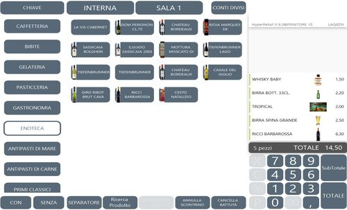
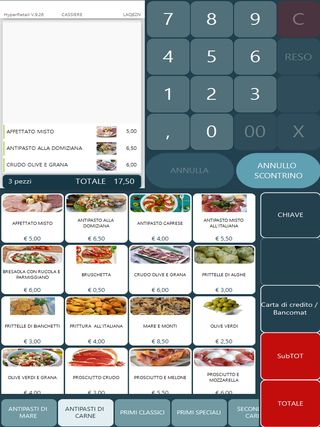
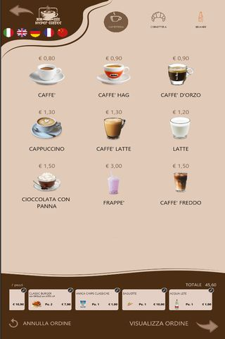
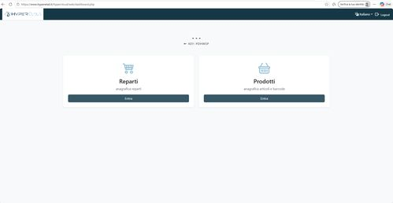
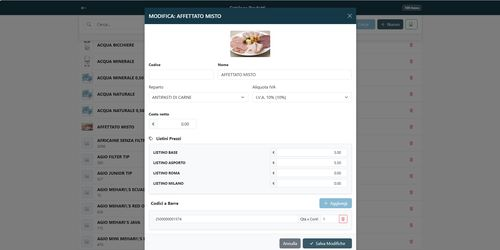
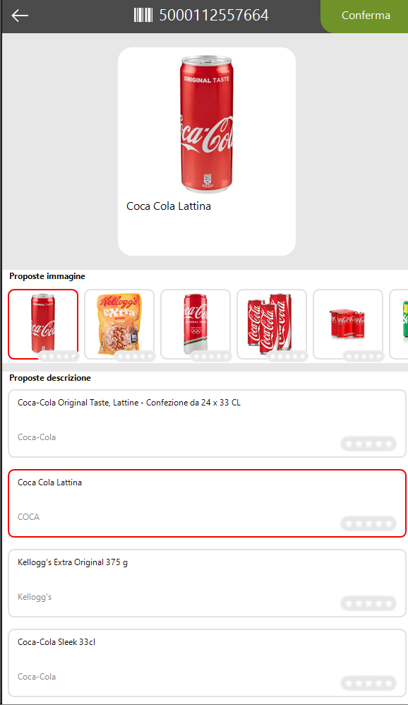

Il Prodotto — HyperRetailCloud
HyperRetailCloud — Formazione Commerciale | Custom S.p.A. © 2026
HyperRetailCloud è un software di cassa potente, flessibile e cloud-native: combina un'interfaccia grafica avanzata e personalizzabile con un'architettura robusta che garantisce operatività continua, anche senza connessione a Internet.
1. Interfaccia di vendita grafica
Il cuore di HyperRetailCloud è la schermata di vendita interamente personalizzabile: tasti, colori, sfondi, immagini, layout — tutto configurabile in base alle esigenze specifiche di ogni esercente e settore merciologico.
Cassa assistita con operatore
Per i punti vendita con operatore, l'interfaccia è semplice e immediata: pochi tasti grandi, chiari, colorati. Il personale trova subito quello che cerca senza navigare menu complessi.

- Tasti configurabili — colore, icona, immagine prodotto, testo: ogni tasto è personalizzabile
- Layout flessibile — griglia liberamente organizzabile per reparto, categoria o funzione
- Sfondo e grafica — personalizzazione completa dell'aspetto visivo per rispecchiare il brand del cliente
- Multipiattaforma — si adatta a qualsiasi risoluzione, da PC touch a tablet Android

Ogni tasto può mostrare la foto del prodotto, il nome e il prezzo — il personale seleziona con un tocco. Ideale per ristorazione, bar e locali con menu fotografico.
Totem self-service e self-order

Sul totem self-service HyperRetailCloud trasforma la schermata di vendita in una vera architettura di vendita guidata: il cliente viene accompagnato nel percorso d'acquisto attraverso immagini e video in altissima risoluzione che valorizzano i prodotti e stimolano l'acquisto.
Self-order: uno strumento di marketing attivo
Sul totem ogni schermata vende:
- Immagini e video in altissima risoluzione per ogni prodotto o categoria
- Percorsi guidati dalla scelta al pagamento
- Upselling visivo: suggerimenti contestuali ("aggiungi un extra", "completa il pasto")
- Personalizzazione totale: sfondo, loghi, colori, animazioni — il totem diventa un'estensione del brand
Ideale per: fast food, bar, paninoteche, pizzerie d'asporto, gelaterie.
"Non è solo una cassa in piedi. È un venditore automatico che lavora 24/7, conosce il menu, spinge i prodotti giusti e non si stanca mai."
2. Architettura offline-first: sempre operativo
HyperRetailCloud utilizza un database locale sul dispositivo che consente tutte le operazioni di vendita anche senza connessione a Internet. Quando la rete torna disponibile, il software sincronizza automaticamente i dati in modo bidirezionale con il cloud.
| Con connessione Internet | Senza connessione Internet |
|---|---|
| Dati sincronizzati in tempo reale | Il database locale garantisce vendita continua |
| Anagrafica aggiornata da remoto su tutti i device | Tutte le funzioni di cassa rimangono attive |
| Configurazioni e listini distribuiti istantaneamente | Al ripristino: sincronizzazione automatica bidirezionale |
| Accesso alla Web Console da qualsiasi browser | Nessuna perdita di dati, nessuna transazione persa |
Perché offline-first è un argomento di vendita
Un punto vendita non può permettersi di fermarsi per un problema di rete. Con HyperRetailCloud, anche se la connessione cade, la cassa continua a lavorare normalmente. Il cloud è un potenziamento, non una dipendenza.
3. Tre modi per configurare HyperRetailCloud
HyperRetailCloud offre tre canali distinti per la configurazione, adatti a diversi livelli di utenza e contesti operativi.
① Direttamente dalla cassa
L'operatore accede alla sezione di configurazione dell'app e può modificare anagrafiche, listini e impostazioni di base direttamente dal dispositivo, senza strumenti aggiuntivi.
② HyperLand — l'applicazione del partner
HyperLand è l'applicazione esclusiva per i Partner Custom, il centro di controllo per gestione licenze, personalizzazione e abbinamento hardware. Da HyperLand il dealer può:
- Personalizzare la schermata di vendita — layout, tasti, colori, immagini, grafica
- Gestire le anagrafiche prodotti — inserimento, modifica, importazione
- Gestire le licenze — attivazione, rinnovo, controllo stato da remoto
Riservata ai Partner Custom
HyperLand è accessibile esclusivamente ai Partner Custom autorizzati. Il cliente finale non ha accesso diretto a questa applicazione.
③ Web Console — il portale del cliente finale
La Web Console è il portale web dedicato al cliente finale, accessibile da qualsiasi browser tramite l'indirizzo email abilitato in fase di installazione dal dealer.

- Accesso via browser — nessun software da installare, basta una connessione Internet
- Gestione archivi in autonomia — il titolare aggiorna anagrafiche, prezzi e reparti senza chiamare il tecnico
- Da qualsiasi dispositivo — PC, tablet o smartphone: la Web Console si adatta a qualsiasi schermo
- Accesso sicuro — autenticazione via email configurata in fase di installazione

La scheda articolo nella Web Console: reparto, IVA, listini differenziati (base, asporto, Roma, Milano...) e codice a barre — tutto gestito dal titolare in autonomia, senza il tecnico.
4. Funzionalità incluse nel modulo base
Il modulo base di HyperRetailCloud include già funzionalità avanzate, senza acquisto di moduli aggiuntivi. I moduli settoriali Hyperetail possono essere aggiunti progressivamente per espandere le capacità in base al settore del cliente.
Conti sospesi e gestione multi-conto
HyperRetailCloud consente di parcheggiare uno o più conti aperti e richiamarli in qualsiasi momento per l'emissione del documento telematico. Fondamentale per bar, tabaccherie e qualsiasi attività dove il cliente paga a fine servizio.
- Sospensione conto — il conto va in attesa senza bloccare la cassa: si apre un nuovo conto subito
- Multi-conto simultaneo — più conti aperti in parallelo, richiamabili in qualsiasi momento
- Emissione documento — si richiama il conto sospeso e si emette lo scontrino telematico in un tocco
Stampa comanda contestuale
Anche senza il modulo ristorazione, HyperRetailCloud stampa la comanda in cucina o al banco in due modalità:
- Alla sospensione del conto — la comanda parte nel momento in cui il conto viene parcheggiato
- In contemporanea all'emissione documento — comanda e scontrino escono insieme al momento del pagamento
5. Anagrafica articoli: veloce, guidata e intelligente
La costruzione dell'anagrafica è guidata, rapida e assistita dal cloud: basta scansionare il barcode e il sistema fa il resto.
Come funziona l'inserimento automatico

- Scansiona il barcode — l'operatore legge il codice con lo scanner
- Il cloud riconosce il prodotto — HyperRetailCloud cerca nel database centralizzato
- Proposta automatica — il sistema mostra descrizioni e immagini del prodotto
- L'operatore personalizza — inserisce solo prezzo di vendita, prezzo di acquisto e reparto
- Articolo pronto — in anagrafica in pochi secondi, con immagine inclusa
Risultato
Un catalogo prodotti completo, con immagini, costruito in pochi minuti senza digitare nulla manualmente. Veloce e immediato anche per operatori senza esperienza informatica.
Anagrafica tabacchi — richiede il modulo Monopolio
Per le tabaccherie, l'esercente non deve caricare le oltre 6.000 referenze del Monopolio. Carica solo i prodotti che vende effettivamente — e li trova già con prezzi e barcode aggiornati in automatico.
- Anagrafica personalizzata — solo i prodotti dell'esercente, non l'intero catalogo Monopolio
- Aggiornamento prezzi automatico — ogni variazione del Monopolio viene recepita in tempo reale, senza procedure manuali
- Ideale per chi ha il patentino — gestione semplice, snella e sempre aggiornata
6. Gestione codici alternativi e confezioni
HyperRetailCloud non ha limiti sul numero di barcode abbinabili allo stesso articolo. Una funzionalità che risolve esigenze concrete in più settori.
Codici alternativi
- Più barcode per lo stesso articolo — il prodotto viene riconosciuto da qualsiasi codice associato
- Tabacchi — aggiornamento automatico — basta leggere un singolo EAN e HyperRetailCloud aggiunge automaticamente tutti i codici alternativi disponibili, comprese le stecche
- Nessuna configurazione manuale — il cloud distribuisce i codici alternativi in modo trasparente
Gestione confezioni
La gestione delle confezioni consente di abbinare a un articolo una versione multiplo con un prezzo specifico, diverso dal prezzo del singolo.
- Tabacchi — gestione stecche — ogni stecca è collegata al singolo pacchetto; lo sfusamento aggiorna la giacenza automaticamente
- General store — confezioni multiple — il prezzo della confezione può essere diverso dal prezzo unitario
- Flessibilità totale — ogni articolo può avere più formati, ognuno con il proprio barcode e prezzo
7. Riepilogo funzionalità
| Area | Funzionalità |
|---|---|
| Interfaccia di vendita | Grafica personalizzabile: tasti, colori, sfondi, immagini, video |
| Totem self-service | Architettura di vendita guidata con media in alta risoluzione |
| Offline-first | DB locale + sincronizzazione cloud bidirezionale automatica |
| Configurazione | Da cassa, da HyperLand (dealer) o da Web Console (cliente finale) |
| Conti sospesi | Multi-conto in parallelo con emissione documento differita |
| Stampa comanda | Contestuale alla sospensione o all'emissione documento |
| Anagrafica guidata | Inserimento via barcode + cloud DB con immagini automatiche |
| Tabacchi | Solo i prodotti venduti, prezzi Monopolio aggiornati in real-time |
| Codici alternativi | Nessun limite di barcode per articolo, aggiornamento automatico |
| Confezioni | Gestione stecche e multipli con prezzi differenziati |
← Contesto di Mercato | Successivo: I Piani →
Custom S.p.A. © 2026 — Uso riservato ai partner autorizzati